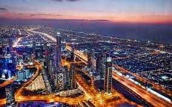

Activities:

Night Life:DUBAI NIGHTLIFE
Dubai’s diverse and varied nightlife has much to offer in the late-night entertainment stakes and the Emirate regularly hosts some of the most in demand artists in the world including Solomun, David Guetta, Carl Cox or 50 Cent as well as the more underground artists that visit Dubai on a weekly basis. There is a wide range of bars and nightclubs in Dubai, but due to the various licencing laws in the UAE most of these are located inside or are connected to hotels. The legal drinking age in Dubai is 21 years of age and night clubs always adhere to this rule. For visitors, a passport is an acceptable form of ID, while for residents, an Emirates ID or a driving license will suffice. If you plan on drinking alcohol make sure you take a cab back home or wherever you plan on going after; the UAE has absolutely a zero-tolerance approach to drinking and driving and police are very vigilant; getting caught will guarantee jail time. As the regular working week starts on a Sunday and ends on a Thursday, the majority of clubs such as White Dubai, Industrial Avenue, Cavalli Club, Cirque Le Soir, VIP Room, Stereo Arcade and Blue Marlin Ibizaare at their busiest on Thursdays and Fridays. This is the case apart from the many popular hotspots that host a ladies’ night, this usually takes place on eitherTuesday or Wednesday and this will see ladies entering for free and are even offered free drinks and food. While most clubs open at around 9/10pm and typically close by 3:00am, there are certain clubs such as BASE Dubaiand White Dubaithat remain open until 4AM, this is usually as a result of a special license being granted. So, whether you’re looking to dress up for a night out at one of Dubai’s best night clubs or just a casual night out with some friends, there are plenty of party spots to pick from. Check our event section to find out the most popular and happening hotspots in Dubai each night of the week.
Day Tours:Get to see Abu Dhabi while you’re in Dubai on this small-group full-day tour. Travel through the desert to the UAE’s capital and discover its highlights as you learn about its history and culture. Explore the Sheikh Zayed Grand Mosque and Heritage Village, dip into the Dates Market, see the President’s Palace and Emirates Palace hotel, stop for photos of Ferrari World on Yas Island, and more. Air-conditioned transport and hotel pickup and drop-off included. Your sightseeing Abu Dhabi City tour starts by meeting your professional tour guide at your selected location or hotel. Take an A/C vehicle to Abu Dhabi for 180km (111mi) away from Dubai (approx 2 hours). Enjoy the ride while listening to your tour guide's stories about one of the richest cities in the world. Once in Abu Dhabi, start with a visit to the Sheikh Zayed Grand Mosque- the eighth biggest mosque in the world which accommodates some 40,000 worshipers inside its walls, the mosque showcases the cultural diversity of the Islamic world and it’s an expression of a visionary leader who believed that nothing is impossible and conceived that the most gracious achievements start from the heart. Then we drive down to the city’s Corniche, an 8km stretch of pristine waterfront which has been awarded coveted Blue-flag status, a guarantee for clean and safe bathing water. Next, pass by the ultra-glamorous Emirates Palace, the official guest place of Abu Dhabi’s government. Many of the 302 rooms and 92 suites, are finished in gold and marble. Then take a look from the other side at the adjacent luxurious President’s Palace. Proceed further for another photo stop at a landmark Abu Dhabi structure - the Etihad Towers, which is more famously known as the skyscraper in “Fast & Furious 7” movie. Watch in awe how five elegant towers stand together, creating wonderful views to onlookers. Your Abu Dhabi city tour continues as you take a quick look at the Emirate’s history at the UAE Heritage Village. Learn about the traditional sides of the desert way of life, including a camp with coffee pots, a tent made of goat hair, and the falaj system, in the open area museum. Here, you’ll also visit the Abu Dhabi Museum that’s located inside the Heritage Village. In this place you will also come across various craftsmen exhibiting time-tested.
Guided Boat Tours:Experience the unspoilt splendor of Oman’s Musandam Peninsula from the water on a full-day trip from Dubai. Travel to mountainous Musandam, a pocket-sized chunk of Oman northeast of Dubai, and settle aboard a wooden ‘dhow’ sailboat at Dibba for a 5.5-hour cruise. Then, simply sit back and drink in the gorgeous scenery and seascapes as you waft by rocky peaks, secluded coves and sandy beaches. Watch for pods of dolphins, stop to bathe or snorkel, and stay refreshed with unlimited complimentary sodas and a scrumptious Arabic buffet lunch on deck. Begin with a pickup from your Dubai hotel and hop inside your air-conditioned minivan. Then, enjoy the views as you drive to Musandam, a mountainous area of Oman on the northeast tip of the Arabian Peninsula. Drive through the rugged Hajar Mountains, cross the Omani border, and continue to the Dibba region, an idyllic chunk of coast lapped by the waters of the Gulf of Oman. Arrive in the town of Dibba, and board a double-decker Omani dhow for your cruise. Then, feast your eyes on the views as you sail along the untouched Musandam coast. Ogle the towering mountains, sea grottos and cliffs, and drift past steep-sided Zighy Bay and the secluded, palm-lined beaches of the fishing village of Haffa. As you sail, polish your tan on the sun deck or relax on a cool, shaded deck, keeping your eyes peeled for dolphins playing in the waters. Stay refreshed with the unlimited sodas, waters, tea and coffee available on board. Stop for a swim in the crystalline seas or use the supplied snorkeling equipment to discover the underwater world — the clarity of Musandam’s waters makes it a snorkeler’s dream. Afterward, sit down to a delicious, onboard Arabian-style buffet lunch. Dishes may vary, but expect barbecued chicken, green salads, hummus (chickpea dip), pasta and more.
Dubai Activities Specials
Enjoy a night out watching the best rated shows. You will laugh, cry, and many things in between.